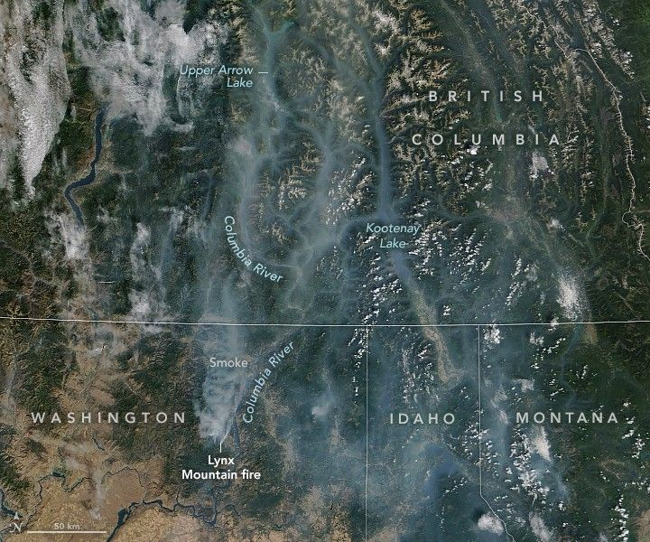

Smoky Skies in the Pacific Northwest
Throughout the summer, satellites have tracked smoke in Washington state as hot weather, bouts of strong wind, and a prolonged drought have fueled several outbreaks of wildland fires. On September 13, 2025, the MODIS (Moderate Resolution Imaging Spectroradiometer) on NASA’s Terra satellite captured this view of smoke spreading from the Lynx Mountain fire across the northeastern part of the state and into British Columbia.
NASA satellites first imaged the Lynx Mountain fire in early September, along with several other nearby fires that emerged in Stevens County. By September 15, the fire had charred 7,839 acres (3,172 hectares) and was 22 percent contained.
As fires become an increasingly common part of North American summers, there is growing recognition among water managers and hydrologists that smoke and ash may be affecting rivers and lakes in various ways—and that these impacts warrant further study.
Researchers have already found that after fires, streamflow often increases and that waterways typically carry increased loads of certain nutrients, ions, organic chemicals, and metals. While smoke and wind can deposit ash directly into waterways, runoff is thought to be a particularly important pathway for ash to reach water. Once in the water column, ash particles can scatter light, altering conditions in ways that could significantly impact aquatic life.
Another team of researchers found that between 2019 and 2021, smoke touched 99.3 percent of North America, potentially affecting more than 1.3 million lakes. They calculated that 98.9 percent of these lakes experienced at least 10 “smoke days” during that period, while 89.6 percent saw more than 30 smoke days. In some regions, lakes experienced up to four months of cumulative smoke days.
In mid-September, the National Interagency Fire Center reported that 4.3 million acres had burned throughout the United States in 2025, about 2 million acres below the 10-year average for that point in the year.